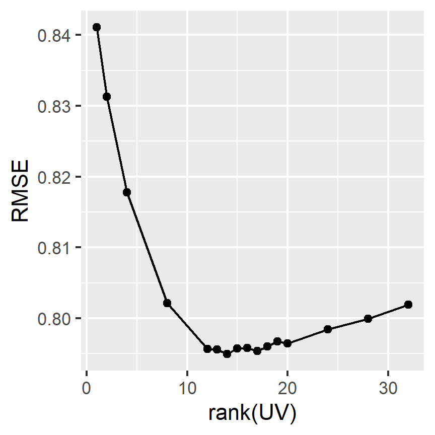

Chapter 3 Funk’s matrix factorization algorithm
In this section, we consider Funk’s matrix factorization (MF) algorithm (Funk 2006; Koren, Bell, and Volinsky 2009) for rating prediction. We use the model \(Y \sim P + UV^\mathrm{T} + \varepsilon\) where:
- \(Y\) is the \(N_\mathrm{U}\times N_\mathrm{M}\) rating matrix, i.e., with \(N_u\) users and \(N_i\) movies,
- \(P\) represents the predictions from best model of the previous section,
- \(U\) and \(V\) are \(N_\mathrm{U} \times k\) and \(N_\mathrm{M} \times k\) matrices, respectively, where \(k\) is the number of latent features to be found.
Unknown ratings \(Y_{u,i}\) can thus be estimated as \(P_{u,i} + U_u V_i^\mathrm{T}\). The parameter \(k\) is also the rank of matrix \(UV\); i.e. \(UV\) is a rank-\(k\) approximation of the residual matrix \(Y-P\).
Funk’s MF estimates \(U\) and \(V\) using gradient descent, but operating only on the known ratings. First, \(U\) and \(V\) are seeded with random values. Then, for each epoch, the algorithm iterates over all known ratings \((i,j)\) in the training set and updates the feature matrices as follows:
\[e_{ij} = Y_{ij} - P_{ij} - U_i V_j^\mathrm{T}\] \[U_i \gets U_i + \gamma(e_{ij} V_j - \lambda U_i)\] \[V_j \gets V_i + \gamma(e_{ij} U_i - \lambda V_j)\]
where \(\gamma\) is the learning rate and \(\lambda\) is a regularization parameter. In this report, these are set to 0.02 and 0.001, respectively, in accordance to guidance from Funk (2006). The code for the Funk MF implementation used in this report can be found in Appendix A.
# Residuals from previous best model
previous_train <- genre_biases_reg[
user_biases_reg[
movie_biases_reg[
edx_train, on = 'movieId'],
on = 'userId'],
on = 'genres'] |>
mutate(pred = mu + b_i + b_u + b_g + f_t[weekNum]) |>
pull(pred)
residuals_train <- edx_train$rating - previous_train
# Test set predictions for previous best model
previous_test <- genre_biases_reg[
user_biases_reg[
movie_biases_reg[
edx_test, on = 'movieId'],
on = 'userId'],
on = 'genres'] |>
mutate(pred = mu + b_i + b_u + b_g + f_t[weekNum]) |>
pull(pred)
# Obtain new movie and user indices **without gaps**, and save the mappings
Uidx <- numeric(max(edx_train$userId))
Uidx[unique(edx_train$userId)] = seq(uniqueN(edx_train$userId))
Vidx <- numeric(max(edx_train$movieId))
Vidx[unique(edx_train$movieId)] = seq(uniqueN(edx_train$movieId))
# Funk matrix factorization. See C++ source for full documentation.
# Values for regCoef and learningRate are as suggested by [Funk 2006].
Rcpp::sourceCpp("svd.cpp")
funk <- function(Uidx, Vidx, residuals, nFeatures, steps = 500,
regCoef = 0.02, learningRate = 1e-3) {
# Change Uidx and Vidx to 0-based, for C++ only.
funkCpp(Uidx[edx_train$userId] - 1,
Vidx[edx_train$movieId] - 1,
residuals_train,
nFeatures, steps, regCoef, learningRate)
}
# Compute RMSE values for varying number of MF features.
set.seed(1)
if (!file.exists('funk_tuning.Rdata')) {
nFeatures <- c(1, 2, 4, 8, seq(12,20), 24, 28, 32)
rmses <- sapply(nFeatures, \(nF){
message(nF, ' features')
# Run Funk MF
set.seed(1)
funkResult <- funk(Uidx, Vidx, residuals_train, nFeatures = nF, steps = 500)
U <- funkResult$U
V <- funkResult$V
# Uidx[u] is the row index of user u in matrix U
# Vidx[v] is the row index of movie v in matrix V
predicted_ratings_funk <- edx_test |>
mutate(pred = previous_test +
map2_dbl(userId, movieId, \(u,v) U[Uidx[u],] %*% V[Vidx[v],])) |>
pull(pred)
rmse <- RMSE(predicted_ratings_funk, edx_test$rating)
message(rmse,'\n')
return(rmse)
})
save(nFeatures,rmses, file = 'funk_tuning.Rdata')
}
set.seed(1)
load('funk_tuning.Rdata')
par(cex = 0.7)
qplot(nFeatures, rmses, xlab = 'rank(UV)', ylab = 'RMSE', geom = c('point','line'))
nFeaturesOpt <- nFeatures[which.min(rmses)]
nFeaturesOpt## [1] 14Using the new model with \(k=14\) to predict ratings for the edx_test gives the following RMSE
values:
# Run Funk MF
set.seed(1)
if (!file.exists('funk.Rdata')) {
funkResult <- funk(Uidx, Vidx, residuals_train, nFeatures = nFeaturesOpt, steps = 500)
save(nFeaturesOpt, funkResult, file = 'funk.Rdata')
}
set.seed(1)
load('funk.Rdata')
U <- funkResult$U
V <- funkResult$V
# Uidx[u] is the row index of user u in matrix U
# Vidx[v] is the row index of movie v in matrix V
predicted_ratings_funk <- edx_test |>
mutate(pred = previous_test +
map2_dbl(userId, movieId, \(u,v) U[Uidx[u],] %*% V[Vidx[v],])) |>
pull(pred)
rmse <- RMSE(predicted_ratings_funk, edx_test$rating)
# Compute RMSE and add to data.table
RMSEs <- RMSEs |>
add_row(Method = "Section 2 best model + Matrix factorization",
RMSE = RMSE(predicted_ratings_funk, edx_test$rating),
"RMSE (clamped estimates)" = RMSE(clamp(predicted_ratings_funk), edx_test$rating))
RMSEs[nrow(RMSEs),] |> kable(align='lrr', booktabs = T) |> row_spec(0, bold = T)| Method | RMSE | RMSE (clamped estimates) |
|---|---|---|
| Section 2 best model + Matrix factorization | 0.7949206 | 0.7939817 |
The RMSEs of all models in this report, evaluated using edx_test, are as follows:
RMSEs |> kable(align='lrr', booktabs = T, linesep = "") |> row_spec(0, bold = T)| Method | RMSE | RMSE (clamped estimates) |
|---|---|---|
| Mean only | 1.0600537 | 1.0600537 |
| Movie effects | 0.9429615 | 0.9429615 |
| Movie + user effects | 0.8646843 | 0.8644818 |
| Movie + user + genre effects | 0.8643241 | 0.8641138 |
| Movie + user + genre + time effects | 0.8641266 | 0.8639174 |
| Movie + user + genre + time effects (regularized) | 0.8636151 | 0.8634932 |
| Section 2 best model + Matrix factorization | 0.7949206 | 0.7939817 |
We now “submit” our best model, i.e. \[\begin{equation} Y_{u,i} \sim \mu + b_{1;i} + b_{2;u} + b_{3;g(i)} + f(t_{u,i}) + UV^\mathrm{T} + \varepsilon_{u,i}, \tag{3.1} \end{equation}\]
with parameters mu, movie_biases_reg, user_biases_reg, genre_biases_reg,
f_t, U, and V, for final validation.